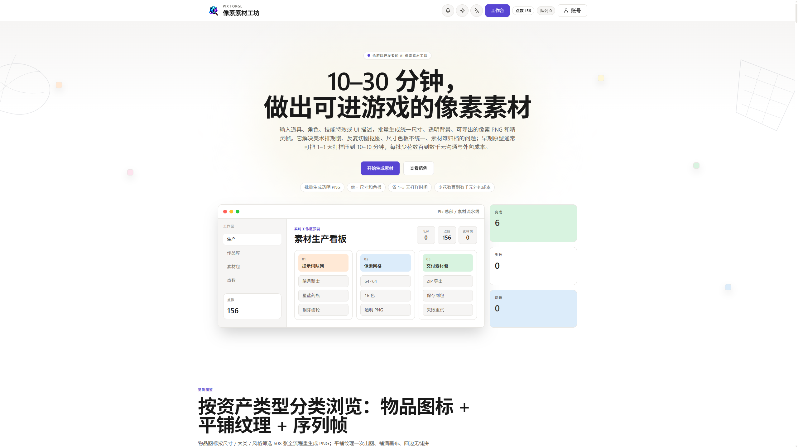
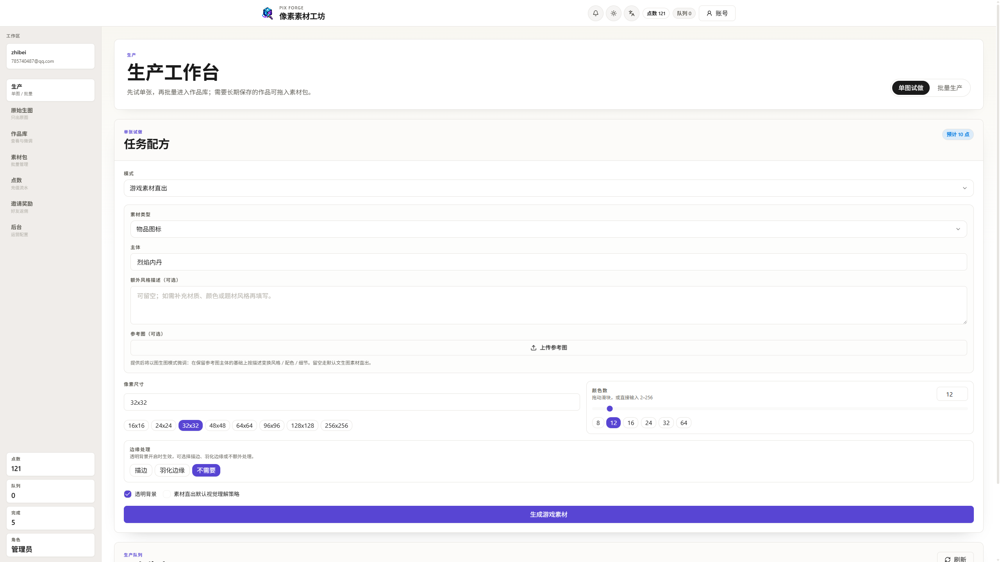
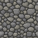
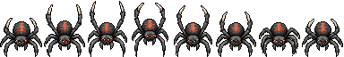
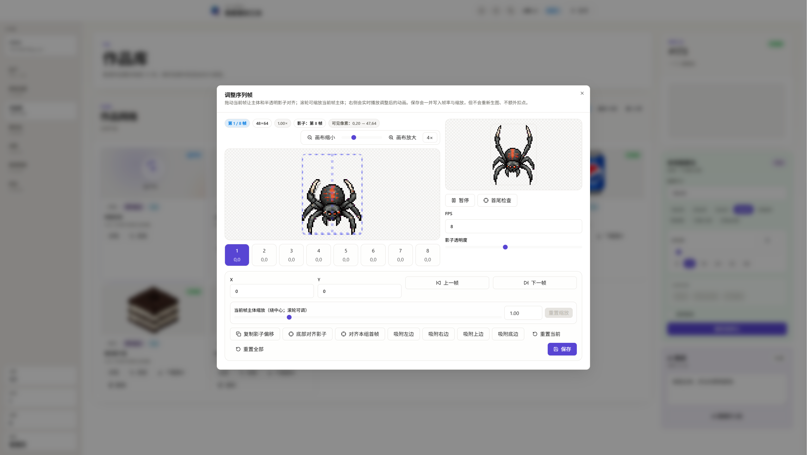
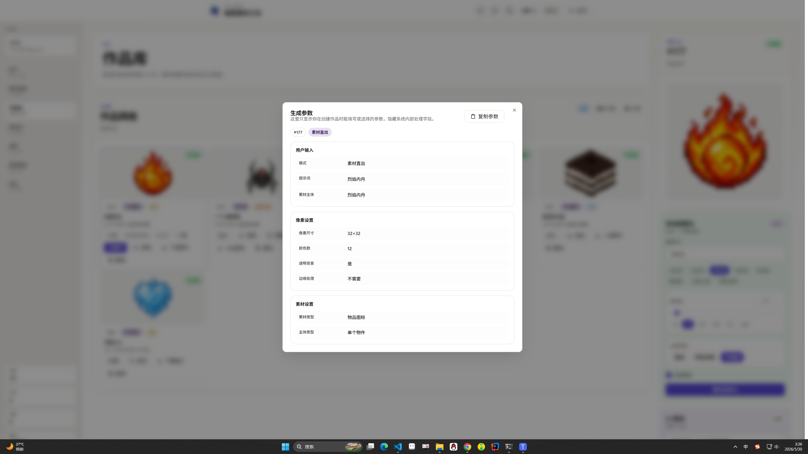

为独立游戏开发者、Game Jam 选手和像素美术爱好者准备的在线像素素材生成工具。

Pix 会围绕三个关键点生成素材：像素对齐、调色板受控、下载后可直接使用。
输入描述和参数后，Pix 会自动完成生成、像素化和透明背景处理。
素材类型选「物品图标」，主体输入烈焰内丹，画布 32×32，颜色数 12。

放大后可以清楚看到，它不是糊成一团的图片，而是一格一格能数清的像素图标。
地砖、木板、草地、墙面，都可以通过 4×4 预览确认四边是否自然衔接。

左边可以直接看动画循环，右边保留完整条带，方便同时确认播放效果和输出形式。

拖动位置、滚轮缩放，还能用上一帧的半透明影子来对齐。保存时只会本地重合成，不会再次消耗点数。

每张图都能展开查看完整参数；生成消耗清晰可见；邀请好友还能获得点数奖励。

把画素材的时间， 留给你的游戏本身。
Pix 现在已经上线，浏览器打开 www.mcwar.cn 就能用，不需要安装任何东西。
链接放在简介里。用一句描述生成物品图标、平铺纹理、序列帧动画。